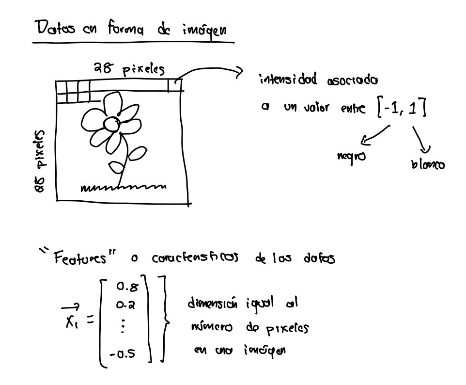
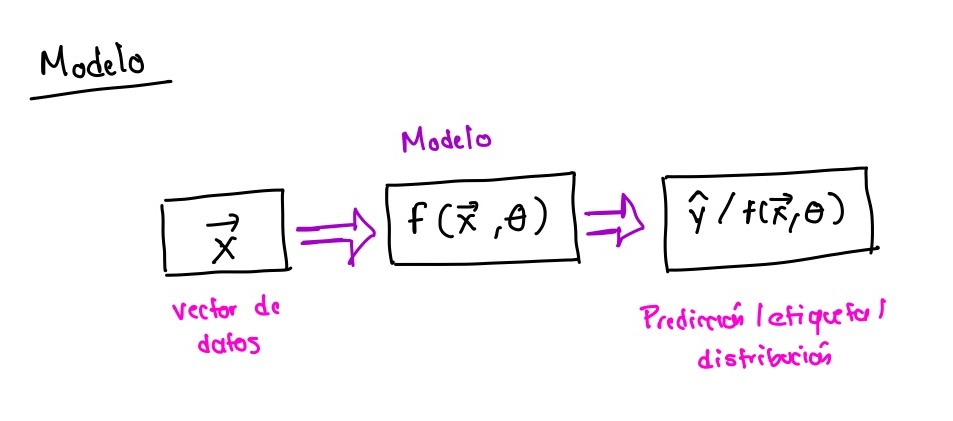

Introduccion al aprendizaje automatizado¶
“El aprendizaje automatizado busca aprender patrones o la estructura base de un conjunto de datos con la meta de hacer deducciones o hacer predicciones.”
Sin duda el campo de la inteligencia articicial y mas expecificamente, el campo del aprendizaje automatizado es uno de los campos con mas desarrollo en el area de la computacion y la tecnologia. El aprendizaje automatizado, o machine learning (ML), por su traduccion al ingles es un campo interdisciplinario con diversas aplicaciones. Algunas de estas areas incluyen la estadistica, las matematicas, la genetica, la neurociencia y la economia, por mencionar algunas.
Durante las siguientes sesiones, vamos a explorar la interseccion del aprendizaje automatizado y la computacion cuantica, una area que se espera tenga un impacto grande en la demostracion de la supremacia cuantica. Por otra parte, se espera observar ventajas considerables al utilizar algoritmos cuanticos de aprendizaje automatizado, expecificamente en los siguientes aspectos:
Reduccion en tiempo de entrenamiento
Un menor tamaño y numero de “features” o parametros del conjunto de datos utilizados durante el entrenamiento.
En terminos matematicos, el aprendizaje automatizado se puede definir como el proceso de aproximar cierta funcion o expresion matematica, asi como optimizar dicha aproximacion. Por ejemplo, podemos definir una funcion arbitrarioa \(g(x)\) que nos permite, mediante una estructura o un conjunto de reglas, interpretar un conjunto de datos de una manera particular. Dicha funcion implica que el conjunto de datos que estamos buscando analizar o describir tiene una estructura definids, que, como humanos podemos identificar. El problema es encontrar un modelo matematico que nos permita modelar o describir dicha estructura.
Dentro del contexto del aprendizaje automatizado, podemos aproximar \(g(x)\) mediante un modelo o funcion \(f(\bar{x},\theta)\) que toma como argumentos un sub-conjunto de datos \(\bar{x}\) y que ademas, es parameterizada por un conjunto de parametros \(\theta\). Dichos parametros son optimizados durante el proceso de entrenamiento o de aprendizaje de tal manera que la funcion \(f\) se acerque lo mas posible a la funcion \(g\). Entonces, la meta del aprendizaje automatizado es encontrar un modelo o funcion \(f\) que describa nuestros datos de la mejor manera posible, asi como de encontrarun conjunto de parametros optimos \(\theta\).
Elementos de un modelo de aprendizaje automatizado¶
Datos¶
Los datos son el elemento esencial de un modelo de ML. El modelo elegido sera capaz de aprender patrones y estructuras si se le provee informacion relevante para la tarea que busca ejecutar. Los datos pueden tomar diferentes formas, por ejemplo videos, imagenes, informacion tabulada, etc. El tipo de datos a procesar determinara el modelo de ML que podemos implementar. El siguiente paso es la interpretacion de la informacion, es decir, la manera en que un modelo particular de ML procesa la informacion de entrada. Por ejemplo, si los datos a procesar son un conjunto de imagenes, los datos se pueden representar en forma de vectores con intensidad (en escala de grises o RGB) asociada a cada uno de los pixeles en la imagen.

De esta manera una imagen se puede representar como un vector de intensidades (\(\vec{x_{1}}\)) de dimension igual al numero de pixeles en dicha imagen y nuestro conjunto de datos o imagenes se puede representar como un conjunto de vectores, de la siguiente manera
\( datos = (\vec{x_{1}}, ..., \vec{x_{n}}) \)
Modelo¶
El siguiente elemento a considerar es el modelo que mejor describa la distribucion de los datos que buscamos procesar. Dicho modelo depende de un conjunto de parametros \(\theta\), cuya estructura depende del tipo de modelo seleccionado. En algunos casos, el modelo es capaz de extrapolar a regiones fuera del espacio-fase de los datos utilizados durante el proceso de aprendizaje.

De acuerdo con el diagrama anterior, el modelo procesa el conjunto de datos, y hace un mapeo de la distribucion de “features” o “caracteristicas” y arroja un resultado cuya forma puede ser una prediccion, una etiqueta o una distribucion.
Funcion de costo¶
El utlimo elemento de nuestro modelo de ML es la funcion de costo. La funcion de costo nos permite valorar o evaluar que tan buena aproximacion nos arroja nuestro modelo cuando se compara con los datos que utilizamos durante el proceso de aprendizaje. Una funcion de costo tiene la siguiente forma
\( C(f(\vec{x}, \theta), corecto/incorrecto) = C(\hat{y}, y) \)
Cuando el desemeño del modelo no es el esperado, la funcion de costo adquiere un valor alto y de esta manera nos permite calificar que tan bueno o malo es nuestro modelo ejecutando la tarea que se busca desarrollar, por ejemplo clasificacion o prediccion. Por ejemplo, si consideramos el caso de un modelo que clasifica imagenes en aquellas que contienen la figura de un gato y las que no. Si utilizamos una funcion de costo basada en la cantidad “minimum square error” definida de la siguiente manera:
\( MSE:= (\hat{y} - y )^{2} \)
donde \(\hat{y}\) corresponde a la prediccion arrojada por el modelo y \(y\) es el valor verdadero correspondiente a la funcion \(g\) o a la etiqueta correspondiente dentro del conjunto de datos de entrenamiento. Si asignamos el valor “1” a aquellas imagenes que contienen la imagen de un gato y “0” a aquellas que no la incluyen, la funcion de costo arrojara un valor diferente a cero si \(\hat{y}\) y \(y\) no tienen el mismo valor.